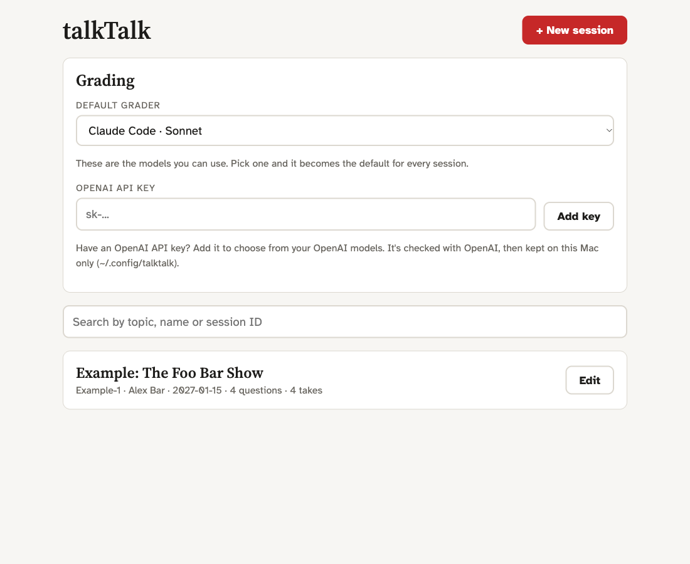
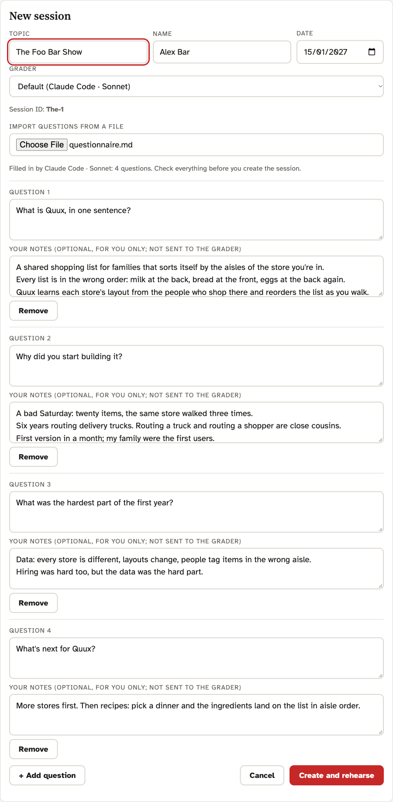
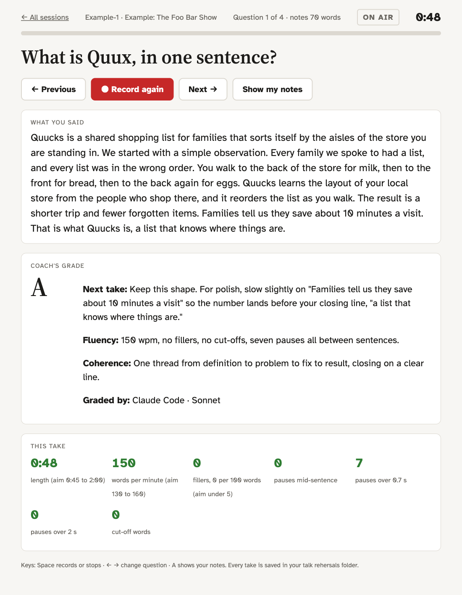
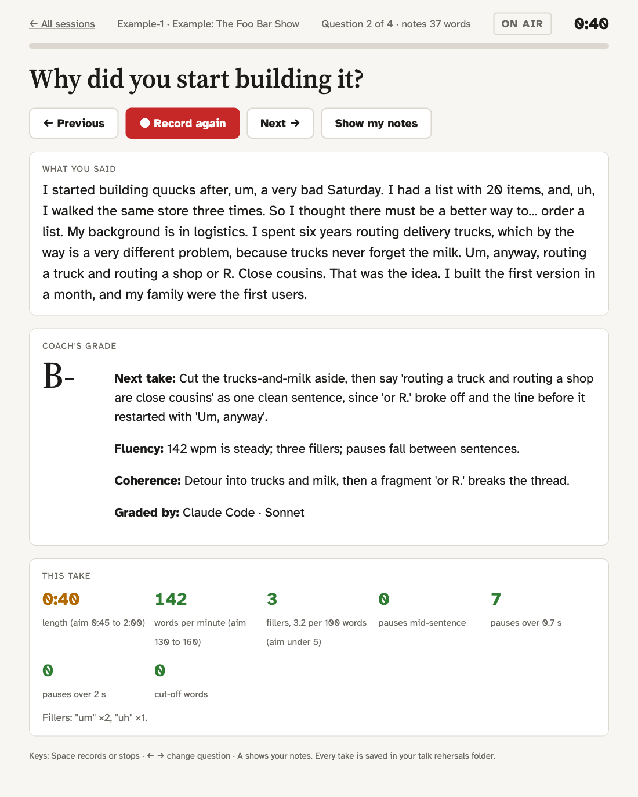
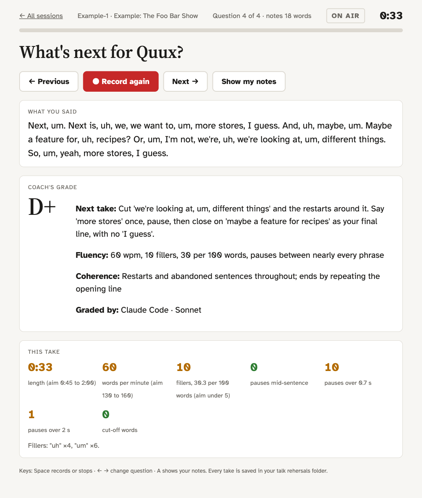

talkTalk
Rehearse interview answers out loud and get every take measured and graded.
Knowing it is not the same as saying it
Most people prepare for an interview, a podcast or a panel by writing. Then they answer out loud and it comes out differently: longer than planned, "um" in every gap, sentences that start, stall and start again. None of it shows on the page, and little of it is audible to the speaker. The listener hears all of it.
Speaking well comes down to two things. Coherence: the answer goes somewhere and ends on a clear final line. Fluency: an even pace, pauses between thoughts rather than inside them, few fillers, few false starts. Both are learned by saying the answer out loud many times and getting feedback after each attempt.
What it does
talkTalk shows one question at a time, records your answer, and within about 15 seconds tells you how it went: pace, fillers, where you hesitated, a letter grade with a note on fluency and one on coherence, and the single most useful fix for the next take.
The grade is about how you said it, nothing else. The grader never sees the question or your notes and never tells you what you should have said.


What to expect
talkTalk ships with a made-up interview, The Foo Bar Show, with four takes graded by the real pipeline.
| Grade | What the take does |
|---|---|
| A | One thread, 150 wpm, no fillers, ends on a clear line |
| B- | A detour, a few fillers, a phrase that breaks off |
| C | Restarts, hedging, 8 fillers, trails off with "So, yeah" |
| D+ | Abandoned sentences, 10 fillers at 60 wpm, no real ending |



Run it
Runs on your Mac. Recordings and transcription stay local (Whisper); only the transcript and its measurements go to the grader you choose: Claude Code or an OpenAI API key.
brew install openai-whisper ffmpeg git clone https://github.com/yoelf22/talkTalk.git cd talkTalk ./run.sh
Needs macOS, Homebrew, Google Chrome, and Claude Code or an OpenAI API key. Full details in the README.